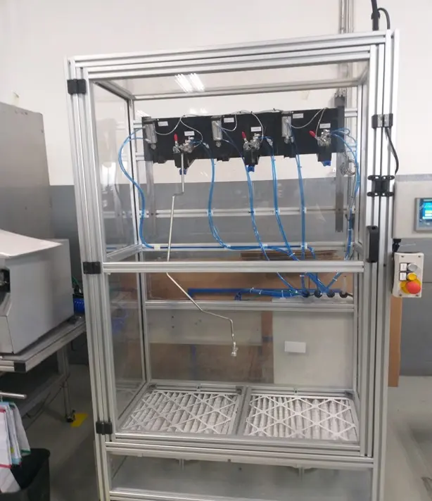

Aire de Alta Presión

Remoción seca de partículas, polvos y virutas mediante flujos de aire comprimido a gran velocidad. Limpieza eficiente y rápida, ideal para estaciones previas al ensamble final o procesos de inspección óptica.

Remoción seca de partículas, polvos y virutas mediante flujos de aire comprimido a gran velocidad. Limpieza eficiente y rápida, ideal para estaciones previas al ensamble final o procesos de inspección óptica.